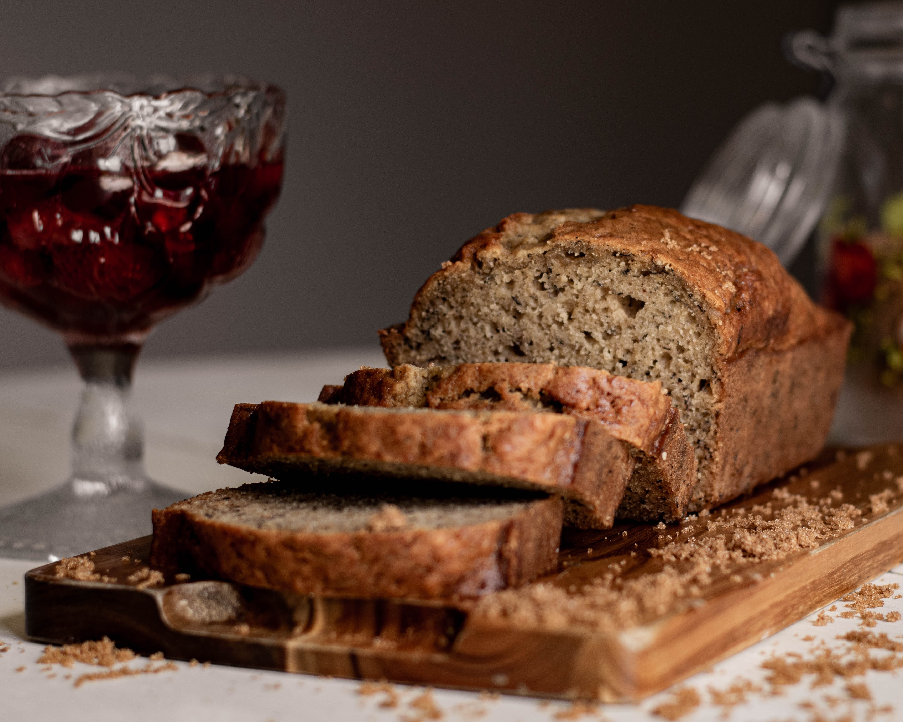
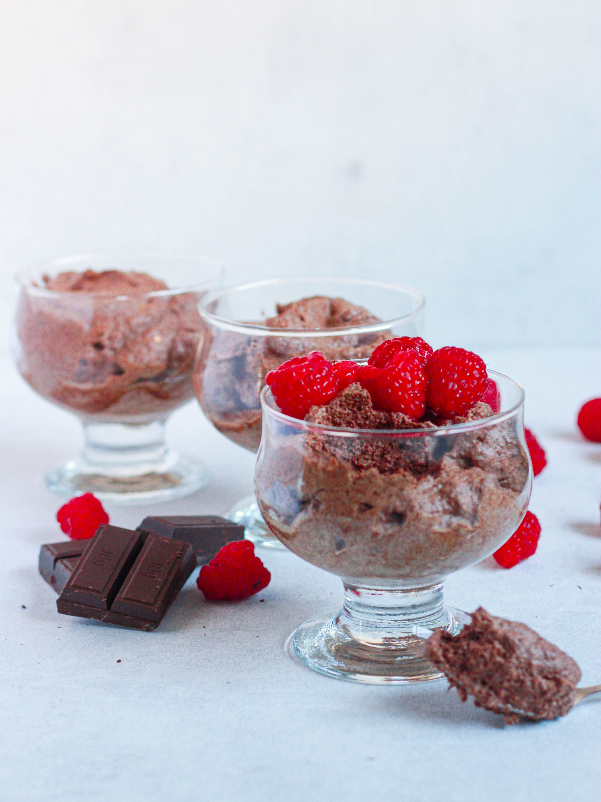

Home
Noord-Amerika
Amerikaans
Mexicaans
Europa
Duits
Frans
Italiaans
Nederlands
Azië
Indonesisch
Japans
Vegan
Over ons
Vegan
Voorgerecht
Hoofdgerecht
Nagerecht
Voorgerecht
Vegan Bananenbrood (10 plakjes)

Ingrediënten
3 rijpe bananen
50 ml zonnebloemolie
25 gram kokosbloesemsuiker
175 gram bloem
1,5 theelepel bakpoeder
Halve theelepel baking soda
Zout
2 theelepels kaneel
Benodigdheden
Cakevorm (ongeveer 20 cm)
Bakpapier
Bereidingswijze
Verwarm de oven voor op 175 graden.
Bedek de cakevorm met een velletje bakpapier of vet de vorm in.
Prak de twee bananen met een vork in een kom en meng de olie en suiker erdoorheen.
Vervolgens meng je in een andere kom de bloem, bakpoeder, baking soda, snuf zout en de kaneel door elkaar.
Meng de bloem beetje bij beetje door het bananen mengsel.
Giet daarna het beslag in de cakevorm.
Snij de derde banaan horizontaal door het midden en leg allebei de helften op het beslag.
Bak het bananenbrood ongeveer 45 minuten goudbruin in de voorverwarmde oven.
Laat het brood vervolgens afkoelen en snij daarna het bananenbrood in plakjes.
Voorgerecht
Nagerecht
Hoofdgerecht
Couscous salade met mango (4 personen)
Ingrediënten
1 limoen
1 mango
Halve komkommer
50 gram amandelen
200 gram couscous
150 gram feta
250 gram cherrytomaatjes
Snuf komijn
Verse blaadjes munt
Halve groente bouillonblokje
Benodigdheden
Middelgrote kom
Bereidingswijze
Bereid de couscous zoals aangegeven op verpakking.
Voeg het bouillonblokje toe aan het water, zodat de couscous een lekkere smaak krijgt.
Snijd de komkommer en de mango in blokjes en de tomaatjes in vieren.
Schep het door elkaar in een kom.
Pers de limoen uit en voeg dit toe aan de kom met de andere groenten en fruit
Schep vervolgens ook de couscous, komijn en de nootjes door de groente en de mango.
(Optioneel) Maak de couscous salade af met de verse munt en blokjes feta.
Voorgerecht
Hoofdgerecht
Nagerecht
Vegan chocolademousse (4 personen)

Ingrediënten
1 gram blik kikkererwten a 400
(gebruikt alleen het vocht)
100 gram pure chocolade (vegan)
50 gram suiker
1 theelepel vanille extract
Benodigdheden
Mixer
Middelgrote (vetvrije) kom
Spatel
Glaasjes om de
chocolademousse in te doen
Bereidingswijze
Smelt de pure chocolade (au bain-marie) in een kom boven een pan met heet water.
Doe het vocht uit het blik kikkererwten in een vetvrije kom.
Vervolgens het vocht stijf kloppen.
Doe tijdens het mixen beetje bij beetje de suiker erbij.
Bij kikkererwten duurt het wat langer om op te kloppen vergeleken met eiwit,
het duurt dus ongeveer 5 tot 10 minuten tot het stijf is.
Spatel de gesmolten chocolade voorzichtig door het opgeklopte kikkererwtenvocht.
Doe hier niet te lang over, dan blijft de chocolademousse luchtig.
Verdeel de chocolademousse over 4 glaasjes.
Laat dit minimaal 3 uur opstijven in de koelkast.
(Optioneel) Garneer eventueel nog met wat geraspte chocolade.